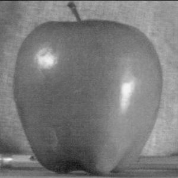

Introduction
This project investigates various techniques for utilizing frequencies to process and creatively combine images. For example, sharpening an image can be achieved by filtering and enhancing its high-frequency components. Edges can be detected using finite difference kernels. Hybrid images can be created by merging the high-frequency details of one image with the low-frequency components of another. Additionally, images can be seamlessly blended across different frequency bands using Gaussian and Laplacian pyramids.
Finite Difference Operator
Methodology
For the two partial derivatives, finite difference kernels were
created as Numpy arrays:
dx_kernel = np.array([[1, -1]]) and
dy_kernel = np.array([[1], [-1]]). These kernels were
convolved with the original image using scipy.signal.convolve2d to
generate the partial derivative images, which were then combined
into a single edge image by calculating the gradient magnitude as
np.sqrt(dx_deriv ** 2 + dy_deriv ** 2). The sigma value
= 1.
dX
dY
Combined gradient
Combined binarized
Derivative of Gaussian (DoG) Filter
Blurred Finite Difference
The image is first blurred to minimize convolution artifacts. This method produces thicker, rounder binarized edges and eliminates small noise and fine details, particularly at the bottom of the image and inside the camera.
dX

dY
Combined Gradient
Combined Binarized

Blurred Finite Difference
Derivative of Gaussian

Image Sharpening
To sharpen an image, a Gaussian kernel is applied to filter out
high frequencies, creating a blurred version of the original. The
high-frequency details are extracted by subtracting the blurred
image from the original (details = target - blurred),
effectively removing the lower frequency features. These details
are then enhanced in the final image using
(result = target + alpha * details, where alpha is a
constant that controls the sharpening intensity.
Taj Mahal
alpha = 1
original

sharpened

Baby
alpha = 2
original

sharpened
Re-sharpening a Blurred Image
The Taj Mahal image was blurred using a gaussian kernel and then sharpened with an alpha of 1.0. While sharpening effectively enhances the building's edges and reduces the "smudged" look, it cannot recover the finer details lost from the initial blur.
Original
High Frequency (high pass filter)

Blurred Image
Resharpened Blurred Image
Hybrid Images
Two images, lo_img and hi_img, are processed separately by
applying a Gaussian blur to create lo and
hi_blurred. The high-frequency details are
extracted from hi_img by subtracting hi_blurred, and the final
hybrid image is produced by averaging lo and the extracted high
frequencies pixel-wise. This used sigma1 = 0.1 and
sigma2 = 1.
Failed
Low frequency cat
High frequency Lion
Failed combination
WorldView
Low frequency eye
High frequency world/earth
Success!
Fourier Transforms
For the hybrid image, Fourier transforms were applied to the original input images, the filtered images lo and hi, and the final hybrid image, resulting in the following visualizations:
Low frequency FFT

Filtered Filter 1
High frequency FFT

Filtered Filter 1

Hybrid Image FFT

Gaussian and Laplacian Stacks
In the Gaussian stack, each level is generated by blurring the previous level with a Gaussian kernel, maintaining the same image size across all levels. The Laplacian stack is then calculated by subtracting consecutive Gaussian levels, with the last level of the Laplacian stack being the last level of the Gaussian stack, ensuring both stacks have the same number of levels.
Multiresolution Blending
Input images are used to create Laplacian stacks. To blend teh images,
for each level,
res[:,:,:,l] = one[:,:,:,l] * mask_stack[:,:,:,l] + two[:,:,:,l] *
(1-mask_stack[:,:,:,l]) I attepmted this was the traditional vertical mask for the orapple, as well as a custom mask.
Orapple
Image 1
Image 2
Mask

Result
Water Licker
Image 1
Image 2
Mask
Result